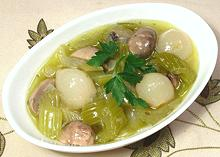

|
Celery à la GrecqueFrance - céleri à la Grecque | ||||
| Serves: Effort: Sched: DoAhead: |
6 salad ** 2+ hrs Best |
Celery Greek Style - an interesting and refreshing lemony salad or appetizer that can be made easily in any quantity - and well ahead of need. | |||
|
1-1/4 tt 6 3 3/4 3/4 1/3 1/3 3/4 15 1/2 1 1 |
# oz cl c c c c t t |
Celery Options Onion Garlic Wine, white dry Water Olive Oil, ExtV Lemon Juice Salt Peppercorns Coriander seed Thyme sprig Bay Leaf |
Make: - (2+ hrs - 20 min work)
|